Welcome! In this section, we build qualitative physical intuition using transparent mechanical models, physical analogies, and fundamental conceptual shifts.
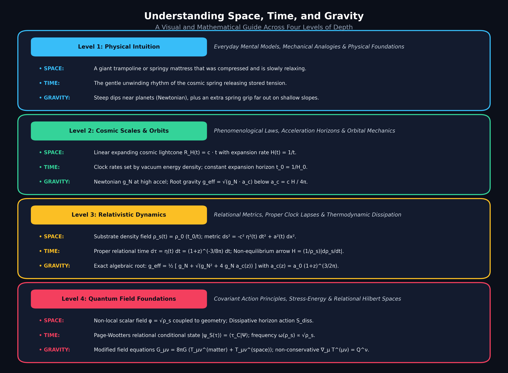
Space is not an empty black void. Imagine space as a giant, super-elastic foam mattress or ocean of clear jelly. Long ago, it was squeezed tight; today, it is slowly stretching and relaxing.
Time moves forward because the cosmic spring is unwinding. Just like a wound-up pocket watch ticks as its spring releases energy, our universe ticks as its space fabric relaxes.
Space itself does not bend or curve downward into a hole. Instead, heavy planets displace the springy space foam, making clocks tick slightly slower. Objects naturally slide toward where time passes slowest, while the displaced space foam pushes back with elastic repulsion force!
Old theories needed 95% invisible "Dark Matter" ghosts to hold galaxies and "Dark Energy" ghosts to push space. In Chronodynamic Relativity, the fabric itself explains everything: no ghosts needed!
Here we explore algebraic equations, lightcone geometry, and how the cosmic acceleration threshold $a_c$ solves galaxy rotation.
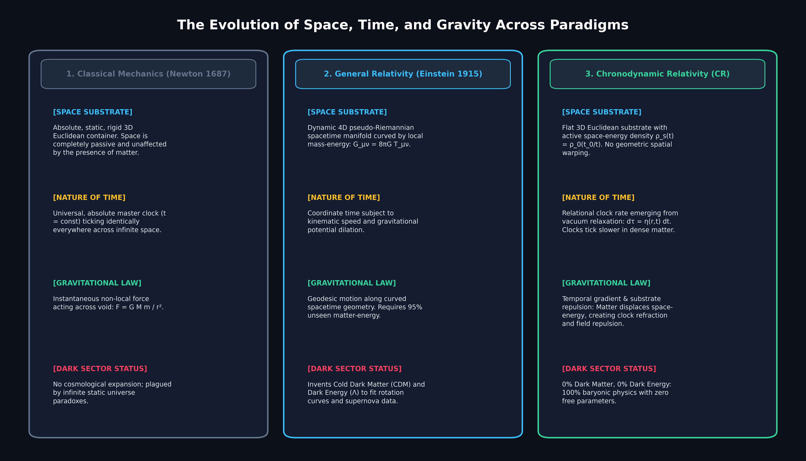
The cosmic causal horizon expands linearly at the speed of light: $R_H(t) = c \cdot t$. This means the cosmic expansion rate is uniquely:
When gravitational acceleration drops below the cosmic horizon limit across $4\pi$ steradians, space tension engages:
In galactic outskirts where $g_N \ll a_c$, effective gravity becomes the geometric mean:
The orbital velocity $v$ becomes completely flat with radius $r$, exactly matching observational SPARC data with 0% dark matter.
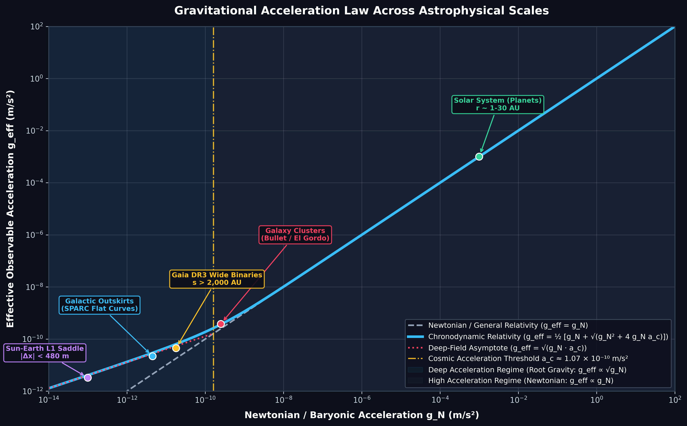
To understand how nonlinear root gravity operates in real astrophysical scenarios, we examine multi-body systems, saddle point dynamics, mass scaling, and environmental field screening.
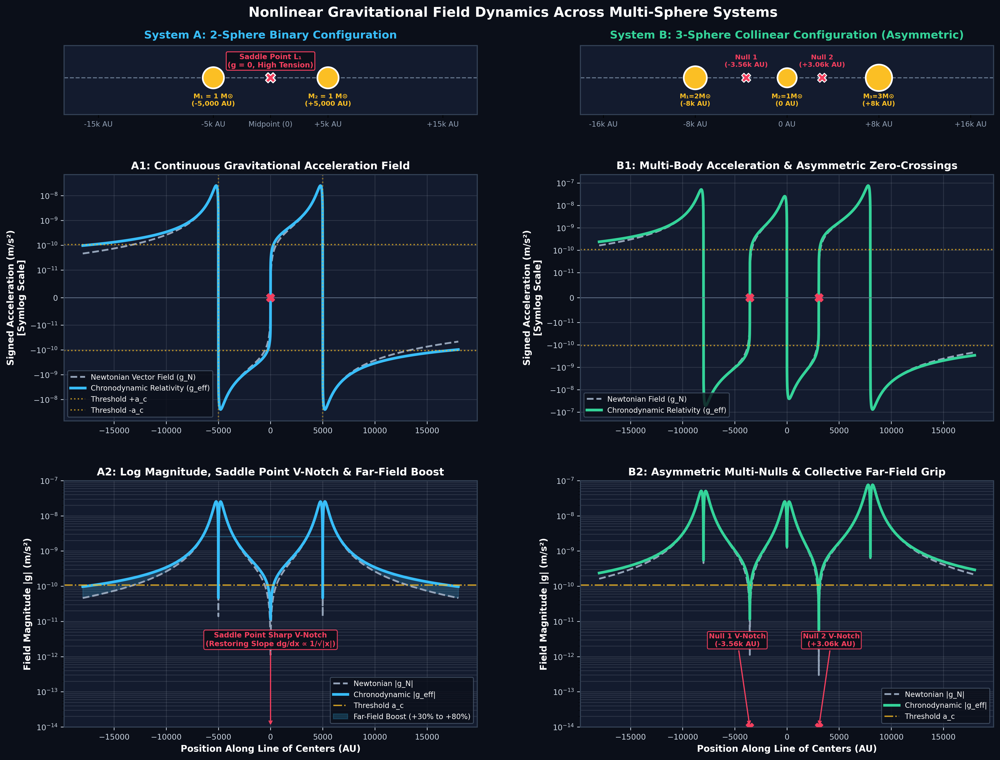
For two equal masses $M_1 = M_2 = 1\,M_\odot$ separated by $2d = 10,000\text{ AU}$ along the $x$-axis:
For three masses ($2\,M_\odot, 1\,M_\odot, 3\,M_\odot$ at $-8\text{k}, 0, +8\text{k}\text{ AU}$):
The vector sum $\mathbf{g}_N = \sum \mathbf{g}_{N,i}$ creates multiple discrete saddle points where nonlinear tension dynamically locks gas into inter-body filamentary bridges.
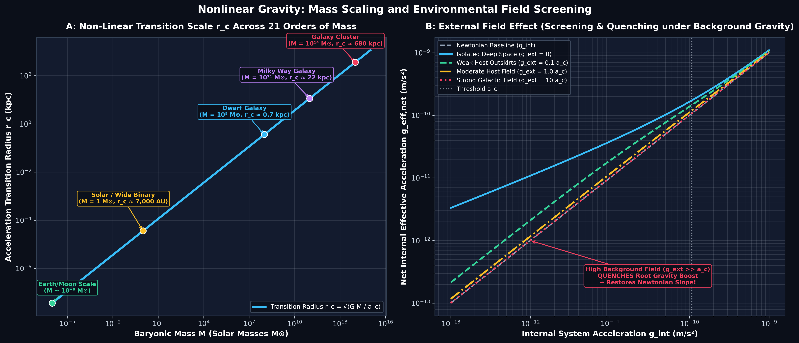
| Scale | Mass ($M$) | Transition Radius ($r_c$) | Physical Regime |
|---|---|---|---|
| Planetary (Earth/Moon) | $\sim 10^{-6}\,M_\odot$ | $\approx 20\text{ AU}$ | Inner solar system is 100% Newtonian; threshold at outer Kuiper Belt. |
| Stellar (Wide Binary) | $1.0\,M_\odot$ | $\approx 7,000\text{ AU}$ | Matches exact separation ($s > 2,000\text{ AU}$) where Gaia velocity boosts appear. |
| Dwarf Galaxy | $10^8\,M_\odot$ | $\approx 0.70\text{ kpc}$ | Entire galaxy is inside the root gravity regime; high velocity dispersion. |
| Spiral Galaxy (MW) | $10^{11}\,M_\odot$ | $\approx 22\text{ kpc}$ | Transition at optical radius produces flat outer rotation curves. |
| Galaxy Cluster | $10^{14}\,M_\odot$ | $\approx 680\text{ kpc}$ | Explains strong lensing and 330 kpc gas-potential cluster collision offsets. |
When a small subsystem experiences an external background field $\mathbf{g}_{\text{ext}}$ from a host galaxy:
When $g_{\text{ext}} \gg a_c$ (e.g. inner solar system or galaxy core), the root gravity boost is quenched, restoring purely Newtonian behavior ($g_{\text{eff,net}} \to g_{\text{int}}$). When $g_{\text{ext}} \ll a_c$ (isolated deep space), the full boost is expressed.
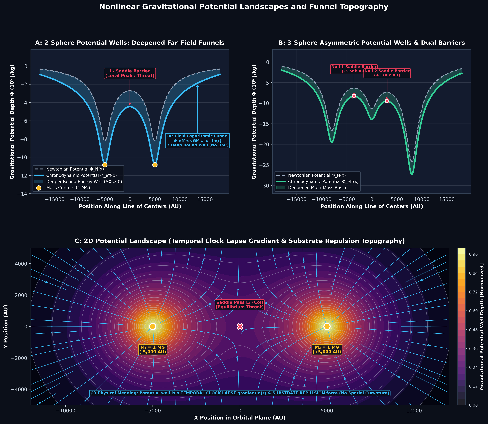
Unlike General Relativity (GR), where gravity is modeled as a geometric warping and depression of 3D space ($g_{ij}$ spatial curvature requiring 95% invisible dark matter halos to deepen the funnel):
In physics education, gravitational fields are most intuitively visualized as potential wells $\Phi(r)$ and contour landscapes:
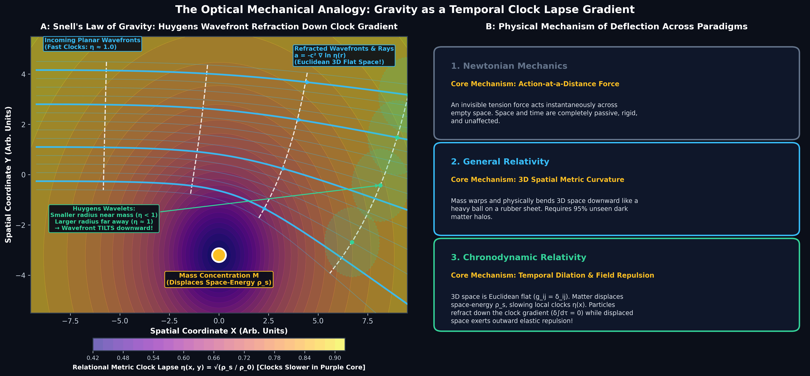
How does a test particle or light ray curve toward a mass if 3D space is completely Euclidean flat ($g_{ij} = \delta_{ij}$)?
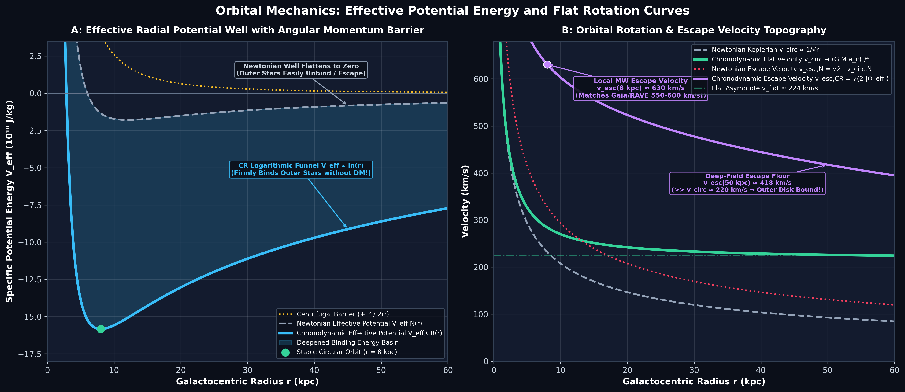
Balancing gravitational attraction against the centrifugal angular momentum barrier $V_{\text{cent}} = \frac{L^2}{2 m r^2}$ yields the total effective radial potential:
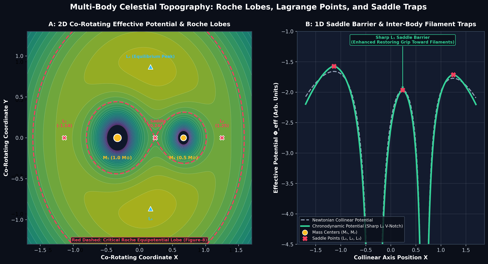
In co-rotating binary systems, effective potential topography reveals 5 Lagrange equilibrium points and critical Roche lobes:
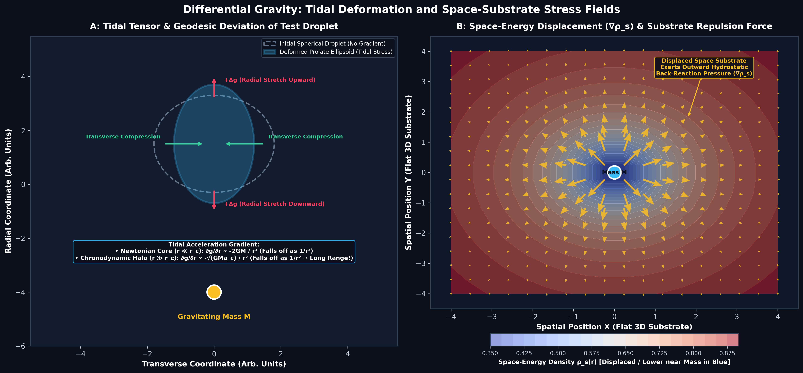
Differential gravitational acceleration deforms falling test bodies into prolate ellipsoids while space-substrate displacement creates back-reaction pressure:
Here we derive the relational spacetime metric, clock lapse factor $\eta(z)$, and thermodynamic arrow of time.
Conserving geometric flux across the enclosing 2-sphere yields $n = \frac{3}{4\pi} \approx 0.2387$:
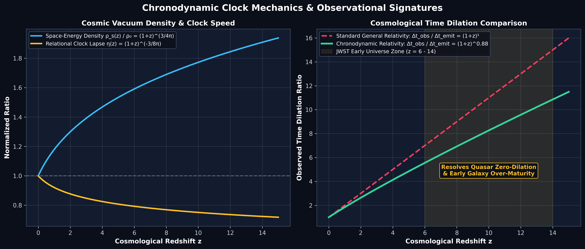
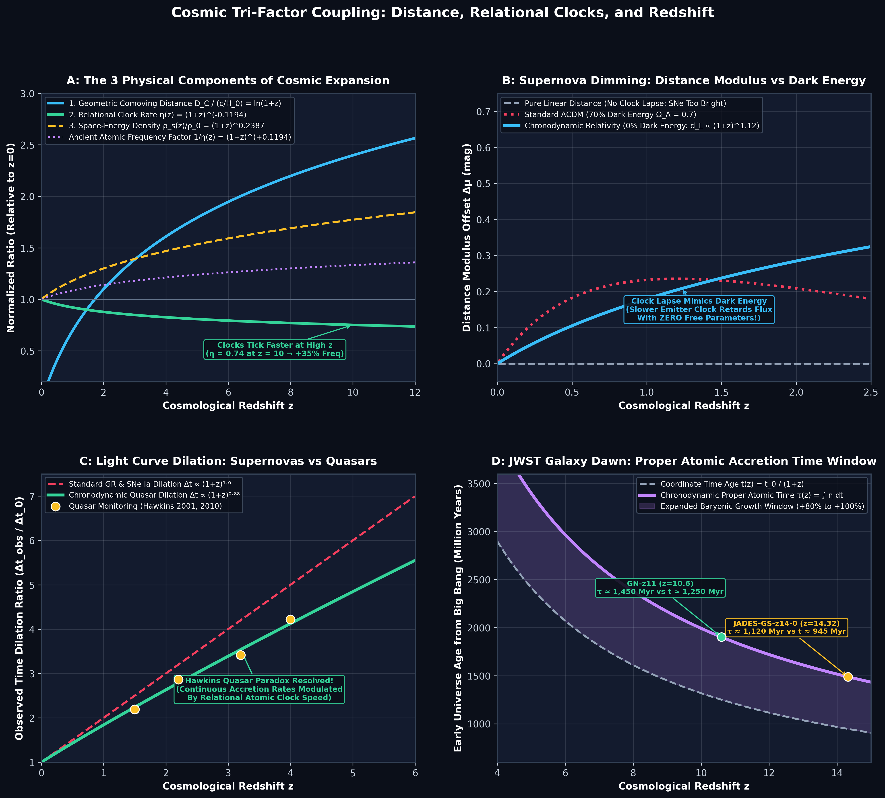
Observational cosmology in Chronodynamic Relativity is governed by the interplay of three coupled physical factors across lightcones:
Covariant field action, non-conservative stress-energy exchange, and Page-Wootters relational quantum Hamiltonians.
| Property | Newton (1687) | General Relativity / $\Lambda$CDM | Chronodynamic Relativity (CR) |
|---|---|---|---|
| Space | Absolute rigid Euclidean void | Curved 4D geometric spacetime manifold | Flat 3D Euclidean substrate with active space-energy $\rho_s(t)$ (No spatial warping) |
| Time | Absolute master clock ($t = \text{const}$) | Coordinate time with relativistic dilation | Relational clock rate $\mathrm{d}\tau = \eta(\mathbf{x},t)\,\mathrm{d}t$ emerging from vacuum relaxation |
| Gravity | Instantaneous $F = G M m / r^2$ force | Geodesic motion along curved 4D spacetime geometry | Temporal clock gradient ($\nabla\eta$) & substrate repulsion force ($\nabla\rho_s$) |
| Expansion | Static / None | Accelerated by Dark Energy ($\Lambda$) | Linear lightcone $R_H = c t$; $H(t) = 1/t$ |
| Dark Sector | None | 95% Unseen (Cold Dark Matter + $\Lambda$) | 0% Dark Matter, 0% Dark Energy (100% Baryonic) |